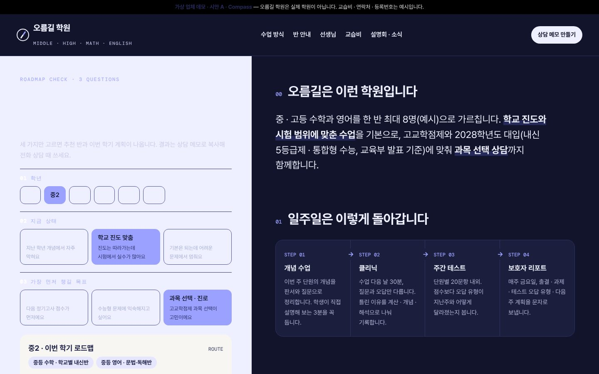
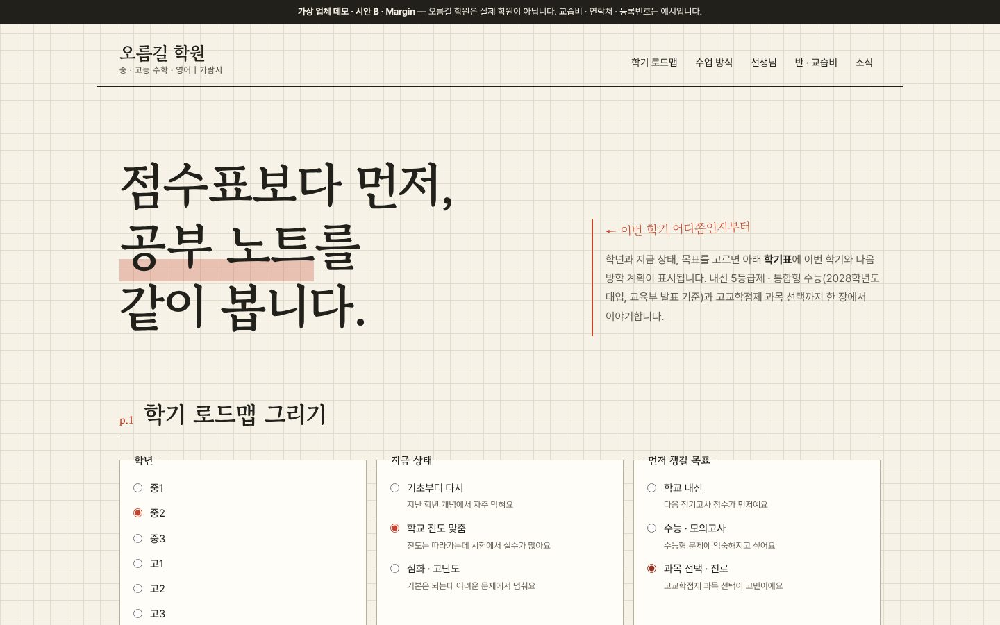
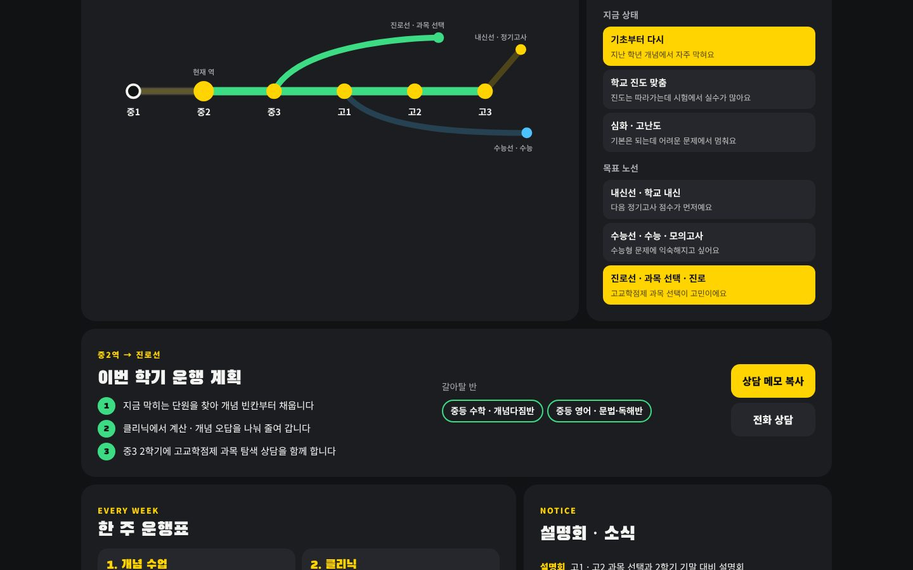

조합 1 선택 반영(이슈 #81) · 가상 업체 데모 · 2026-10-13
같은 로드맵 진단,
세 가지 다른 첫인상.
세 시안 모두 학습 로드맵 진단형입니다. 학년 · 지금 상태 · 목표(내신 / 수능 / 과목 선택)를 고르면 추천 반과 이번 학기 계획이 나오고, 결과를 상담 메모로 복사합니다. 반 안내 · 수업 방식(개념 → 클리닉 → 테스트 → 보호자 리포트) · 선생님 · 교습비 등 게시 · 설명회 · FAQ를 공통으로 담았습니다.

A · Compass · 추천
잉크 인디고 · 페리윙클 · 웜 화이트. 왼쪽에 고정된 3문항 진단 패널, 오른쪽에 학원 정보가 흐르는 분할형. 결과에 맞는 반이 반 안내 표에서 강조됩니다.
시안 열기 →

B · Margin
모눈 크림 · 만년필 블루 · 빨간 색연필. 공부 노트 지면처럼 짠 편집형. 중1~고3 × 학기 · 방학 학기표에 이번 학년 계획이 색연필 동그라미로 표시됩니다.
시안 열기 →

C · Transit
블랙 · 시그널 옐로. 학년을 역으로, 목표를 내신선 · 수능선 · 진로선으로 그린 노선도형 벤토. 반 이름이 흐르는 티커와 큰 제목.
시안 열기 →
디자인 지문
| 시안 | layout | hero | typePair | palette | signature |
|---|
| A · Compass | split (sticky panel) | interactive 3-question check | Pretendard + DM Mono | ink indigo · periwinkle · warm white | 진단 결과 → 반 표 강조 · 상담 메모 |
| B · Margin | editorial notebook | statement (serif) | Gowun Batang + Pretendard | graph cream · fountain blue · red pencil | 학년 × 학기표 색연필 표시 |
| C · Transit | bento mosaic | ticker + giant type | Black Han Sans + Noto Sans KR | black · signal yellow · white | 학년 역 · 목표 노선도 |
교습비 · 등록번호 · 연락처 · 강사는 모두 예시입니다. 합격 · 성적 실적, "합격 보장"·"최다 1등급" 같은 표현, 선행학습을 부추기는 문구는 쓰지 않았습니다(rules/edu.md). 학생 얼굴 사진도 쓰지 않았습니다.
완성할 시안 선택
레퍼런스 비교 보고서 ↗ · 제출한 조합 보기 ↗